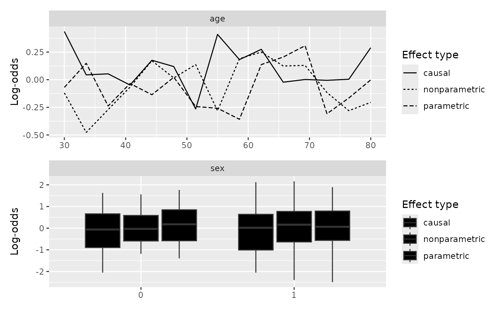
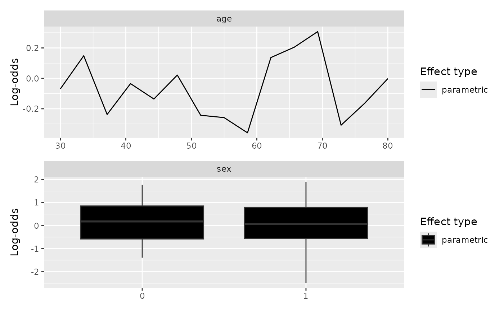

Plot a gg_partial_varpro object
Source: R/plot.gg_partial.R, R/plot.gg_partial_varpro.R
plot.gg_partial_varpro.RdDraws the partial dependence curves from the list that
gg_partial_varpro returns. Continuous predictors get
overlaid line curves, one per effect type; categorical predictors get
side-by-side boxplots. Survival path-C objects (the ones you get when
scale %in% c("surv","chf") was passed to the extractor) are
handed off to plot.gg_partial_rfsrc for drawing.
Arguments
- x
A
gg_partial_varproobject.- type
Character vector; one or more of
"parametric","nonparametric","causal". Defaults to all three. Ignored for path-C objects.- ...
Unused for path-A objects; forwarded to
plot.gg_partial_rfsrcfor path-C objects.
Details
Ensemble mortality (scale = "mortality"): when the provenance scale
is "mortality", the y-axis is labelled
"Ensemble mortality (expected events)". The wording is
deliberate: this is an unbounded relative-risk score, not a
survival probability and not \(1 - S(t)\) (Ishwaran, Kogalur,
Blackstone & Lauer, 2008 doi:10.1214/08-AOAS169).
Reading the partial dependence
For a continuous variable the x-axis is the variable's grid of values
and the y-axis is the partial prediction; each of the three effect
types (parametric, nonparametric, causal) is
drawn as its own line. The shape of the line is the story: a clear
slope says the model uses the variable, a flat line says it
essentially does not, and a U-shape or a threshold says the effect
is nonlinear in a way a single coefficient would miss. For a
categorical variable the picture is a boxplot per level; here the
eye is looking at level-to-level shifts in the centre of each box.
Where the three effect types track each other, the parametric story is a fair summary of what the forest is doing. Where they fan apart — typically the parametric curve smoother than the nonparametric, or the causal curve flatter than either — the variable is one to inspect more carefully before reading a single effect off the plot.
What this tells you
Use these curves to describe how the model uses each variable, not
to claim how the world works. They are a window into the fitted
relationship; they do not by themselves establish that intervening
on the variable would move the outcome. For survival path-C
(scale = "surv" or "chf"), the y-axis is on the
probability or cumulative-hazard scale, which is usually the scale
you want to report to a clinical audience.
References
Ishwaran H, Kogalur UB, Blackstone EH, Lauer MS (2008). Random survival forests. The Annals of Applied Statistics, 2(3), 841–860. doi:10.1214/08-AOAS169 .
Examples
set.seed(42)
n_obs <- 30; n_pts <- 15
mock_data <- list(
age = list(
xvirtual = seq(30, 80, length.out = n_pts),
xorg = sample(seq(30, 80, by = 5), n_obs, replace = TRUE),
yhat.par = matrix(rnorm(n_obs * n_pts), nrow = n_obs),
yhat.nonpar = matrix(rnorm(n_obs * n_pts), nrow = n_obs),
yhat.causal = matrix(rnorm(n_obs * n_pts), nrow = n_obs)
),
sex = list(
xvirtual = c(0, 1),
xorg = sample(c(0, 1), n_obs, replace = TRUE),
yhat.par = matrix(rnorm(n_obs * 2), nrow = n_obs),
yhat.nonpar = matrix(rnorm(n_obs * 2), nrow = n_obs),
yhat.causal = matrix(rnorm(n_obs * 2), nrow = n_obs)
)
)
pp <- gg_partial_varpro(mock_data)
plot(pp)

plot(pp, type = "parametric")
